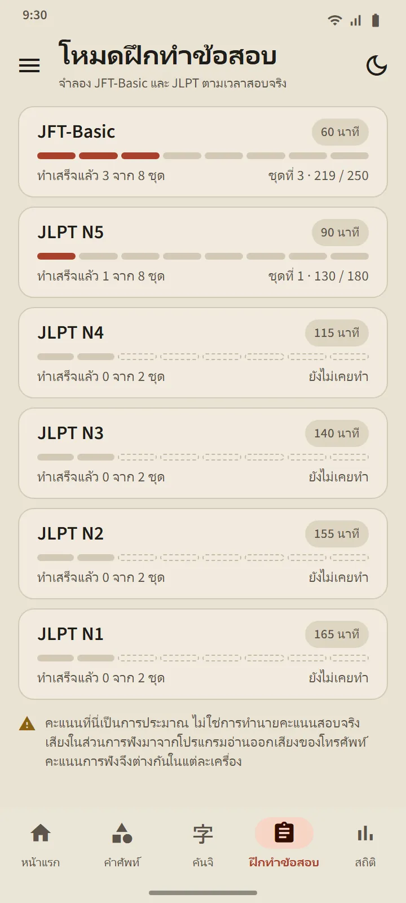
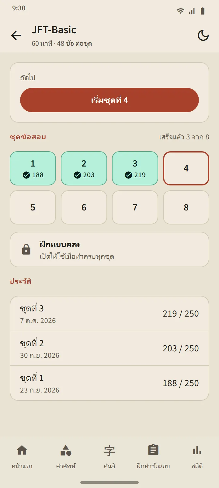
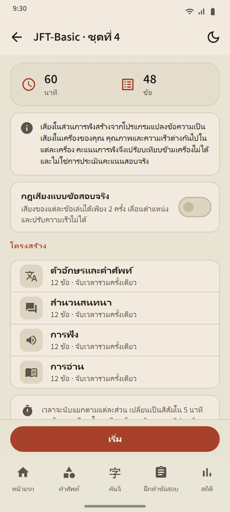
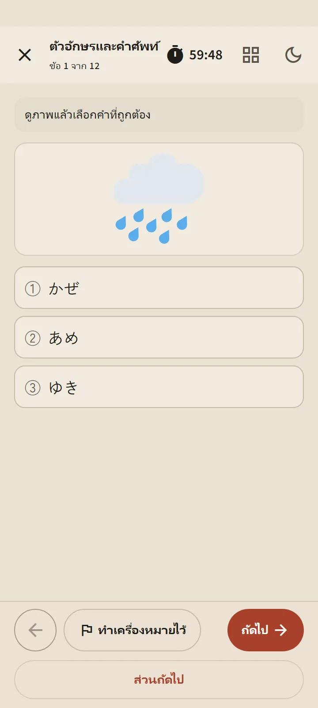
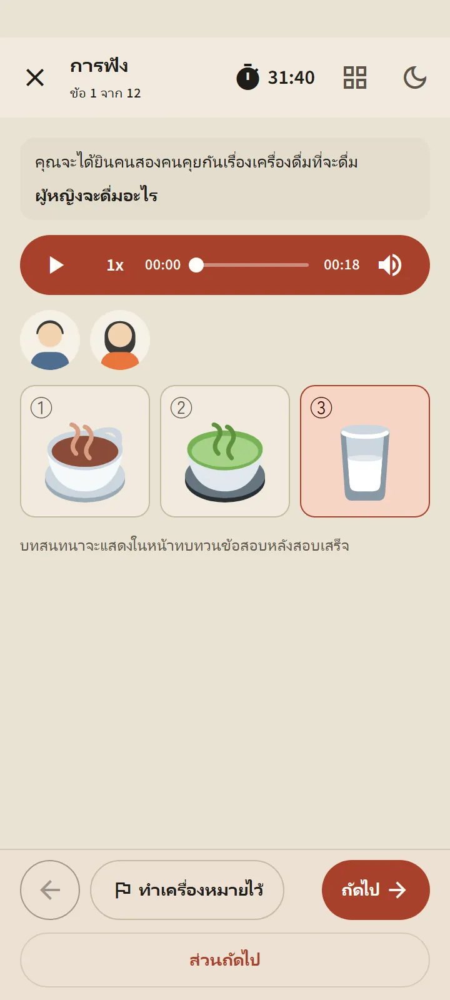
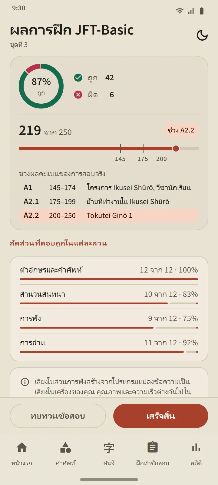
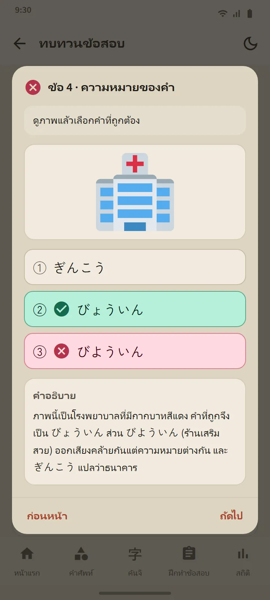

หกระดับ 24 ชุด
การ์ดระดับแต่ละใบในแท็บฝึกทำข้อสอบจะเปิดหน้าระดับ: ปุ่มเริ่ม ช่องชุดข้อสอบที่มีหมายเลข และประวัติ เมื่อทำครบทุกชุดแล้ว ฝึกแบบคละ จะเปิด โดยนำคำถามที่คุณไม่เคยเห็นมาไว้ก่อน ชุดใหม่จะมาพร้อมการอัปเดตแอป
| ข้อสอบ | ชุดข้อสอบ | จำนวนข้อต่อชุด | เวลา |
|---|---|---|---|
| JFT-Basic | 8 | 48 | 60 นาที |
| JLPT N5 | 8 | 68 | 90 นาที |
| JLPT N4 | 2 | 85 | 115 นาที |
| JLPT N3 | 2 | 102 | 140 นาที |
| JLPT N2 | 2 | 107 | 155 นาที |
| JLPT N1 | 2 | 101 | 165 นาที |


รูปแบบคำถามเป็นไปตามข้อสอบจริง
ข้อสอบ JFT-Basic ใช้ตัวเลือกสามข้อ (สี่ข้อในส่วนไวยากรณ์) สถานการณ์และคำสั่งเป็นภาษาของผู้เรียน และมีรูปภาพในหลายข้อ เหมือนข้อสอบตัวอย่างทางการ ข้อสอบ JLPT ใช้ตัวเลือกสี่ข้อ ฟุริงานะที่เหมาะกับระดับ และบทอ่านหลายรูปแบบ: เรื่องสั้น บันทึกสั้น ป้ายประกาศ ข้อความ อีเมล และตารางข้อมูล ทุกชุดผ่านการตรวจก่อนเผยแพร่ และไม่มีข้อสอบจริงถูกคัดลอกมา
ก่อนเริ่ม หน้าสรุปจะแสดงโครงสร้างของชุดนั้น: ส่วนข้อสอบ จำนวนข้อ และเวลา เวลาเป็นไปตามข้อสอบจริง: JFT-Basic จับเวลารวมครั้งเดียว ส่วน JLPT จับเวลาแยกตามส่วน เมื่อคุณไปส่วนถัดไป ส่วนก่อนหน้าจะปิดลง เหมือนในห้องสอบจริง คุณปักธงข้อที่ไม่แน่ใจได้ ออกไปพักชั่วคราวได้ (เวลายังเดิน) และกลับมาทำต่อจากแท็บฝึกทำข้อสอบได้


ข้อสอบฟังด้วยเสียงภาษาญี่ปุ่นของโทรศัพท์คุณ
สคริปต์ข้อสอบฟังอ่านโดยเอนจินอ่านออกเสียงข้อความภาษาญี่ปุ่น (text-to-speech) ของโทรศัพท์คุณ โดยผู้พูดแต่ละคนใช้เสียงต่างกัน ตัวเลือกคำตอบได้ยินเท่านั้น ไม่แสดงเป็นตัวอักษร เหมือนข้อสอบจริง ส่วน JFT-Basic และ N5 ใช้ตัวเลือกเป็นรูปภาพ สวิตช์ “กฎเสียงแบบข้อสอบจริง” จำกัดการเล่นตามที่ข้อสอบจริงอนุญาต คือสองครั้งใน JFT-Basic และครั้งเดียวใน JLPT
เนื่องจากเสียงมาจากโทรศัพท์แต่ละเครื่อง คุณภาพจึงต่างกันไปตามเครื่อง หากโทรศัพท์ยังไม่มีเสียงภาษาญี่ปุ่น แอปจะแสดงวิธีติดตั้ง และส่วนฟังจะถูกข้ามจนกว่าจะมีเสียง

ผลลัพธ์ตามสเกลทางการ แล้วอธิบายทุกข้อ
ผลของ JFT-Basic แสดงบนเส้น 10–250 โดยมีเครื่องหมายที่ 145, 175 และ 200 พร้อมชื่อระดับ A1, A2.1 และ A2.2 และบอกว่าแต่ละระดับใช้ทำอะไรในข้อสอบจริง ผลของ JLPT แสดงแต่ละส่วนที่นับคะแนนเทียบกับคะแนนขั้นต่ำ เพราะในข้อสอบจริง หากส่วนใดส่วนหนึ่งต่ำกว่าขั้นต่ำถือว่าไม่ผ่าน ทั้งสองแบบมาพร้อมร้อยละที่ตอบถูกแยกตามส่วนและตามประเภทคำถาม
ปุ่ม ทบทวนข้อสอบ เปิดทุกข้อพร้อมคำตอบของคุณ คำตอบที่ถูก และคำอธิบาย ข้อสอบฟังยังแสดงสคริปต์ด้วย คำอธิบายมี 12 ภาษา ประวัติของแต่ละระดับเก็บการทำล่าสุดของคุณ และกราฟคะแนนอยู่ในแท็บสถิติ
คะแนนเหล่านี้เป็นค่าประมาณเพื่อติดตามพัฒนาการ ไม่ใช่การทำนายผลสอบจริงของคุณ
ข้อไวยากรณ์ที่รูปประโยคมีบทเรียนจะลิงก์ไปยังบทเรียนนั้นโดยตรงผ่าน "เรียนรูปประโยคนี้"


ฟรีและ Premium
ทุกชุดเปิดให้ใช้ในเวอร์ชันฟรี หลังจากกดเริ่ม การทำรอบถัดไปในระดับนั้นจะถูกล็อกไว้ 7 วัน ระดับอื่นยังเปิดอยู่ และประวัติกับคำอธิบายไม่เคยถูกล็อก ระหว่างที่ล็อก คุณปลดล็อกการทำเพิ่มได้หนึ่งรอบด้วยการดูโฆษณา Premium ไม่มีช่วงพัก โฆษณาไม่เคยปรากฏบนหน้าจอคำถาม ไม่ว่าสำหรับใคร